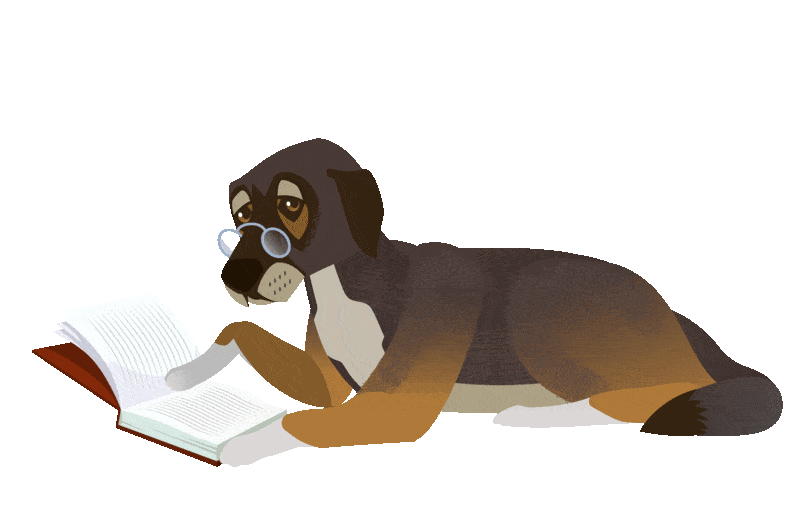

When Ivan Klun painted this picture, talking about space was merely a dream and an intuitive expression for the artist. A hundred years later, humanity, aided by telescopes, managed to peer far into space. Astronomers found something unusual there, something related to our history! Zoom in on the picture to discover what exactly!
